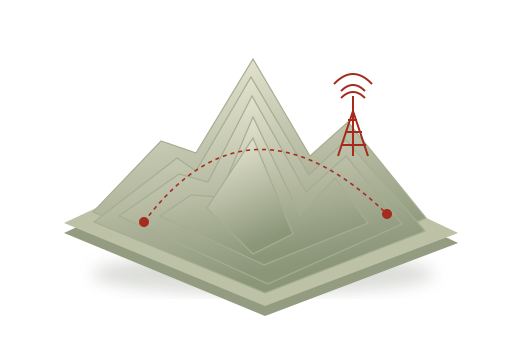

PERU, CONNECTED SINCE BEFORE WE WERE
A country.
A generation.
Connected.
From the neighbourhood internet café to a world in our pockets. Explore how the internet changed Peru, from 1997 to 2025.
Explore the timeline28 YEARS OF CHANGE · ONE SHARED STORY
01 / THE BIG PICTURE
More than a
faster connection.
The internet arrived through shared spaces, expanded through new networks, and became part of everyday life. But access still depends on where you live.
 CONEXIÓN ESTABLECIDA_
CONEXIÓN ESTABLECIDA_
One computer.
A thousand possibilities.
The cabinas públicas opened a door to the web without needing a computer at home.
 EL MUNDO, EN TU BOLSILLO
EL MUNDO, EN TU BOLSILLO
The internet
leaves the desk.
Broadband and mobile networks changed the places and ways people could connect.

LA CONEXIÓN CONTINÚAA connected Peru.
An unfinished story.
From coastal cities to rural communities, the next challenge is meaningful access.
Loading the archive…
Households with internet service, Q4 2025. Preliminary estimates from INEI. Household access is different from individual internet use. Source & definition ↗
A LIFETIME ONLINE
Born in 1997.
Growing up with the internet.
This project follows the internet in Peru across the lifetime of someone born in 1997. It is a researched national history, told through the connections that shaped a generation.
Start in 1997